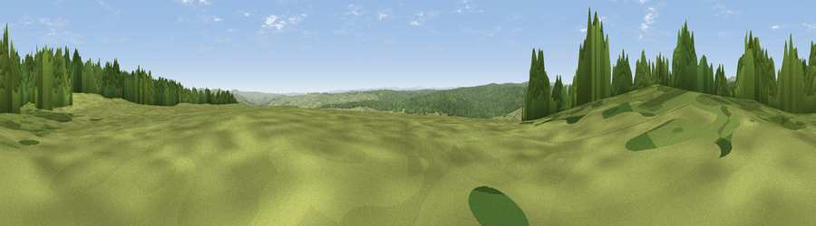

Viewpoint near Falstone
#15088 in England · top 32% of its area beats it · near FalstoneThe view, rendered

A 360° render of this exact spot computed from the terrain model, tree cover and land cover — summer colours, afternoon light, calibrated against photographs of famous viewpoints. Real trees, hedges and buildings will differ in detail.
The panorama
Grey silhouette: terrain skyline in each direction (720 bearings, Earth curvature and refraction included). Dashed green: skyline with trees (+15 m) and buildings (+8 m) as obstacles. Blue strip: how far the ground is visible on each bearing.
Where the view opens
Wedge length = distance to the farthest visible ground on that bearing (vegetation-aware). Rings at 10, 25 and 50 km.
What fills the view
64% woodland · 36% grassland
Angular shares of the visible panorama (visual magnitude), not map area. Landscape diversity 0.29 (0–1 Shannon).
Key numbers
More beautiful places nearby
The staircase of upgrades: each row has a higher view potential than everything closer. Driving times are estimates from straight-line distance, calibrated against real road routing — check an actual route before setting out.
| Place | Direction | Drive | Score |
|---|---|---|---|
| Viewpoint near Greenhaugh | E · 3 km | ~7 min | 66.8 |
| Viewpoint near Greenhaugh | ENE · 5 km | ~12 min | 68.3 |
| Viewpoint near Greenhaugh | SE · 7 km | ~15 min | 71.2 |
| Monkside | NW · 9 km | ~18 min | 78.4 |
| Deadwater Fell | NW · 15 km | ~26 min | 79.4 |
| Viewpoint c11995_7247 | NW · 17 km | ~29 min | 82.1 |
| Viewpoint near Hepple | ENE · 30 km | ~47 min | 82.4 |
| Viewpoint c12273_7856 | NE · 32 km | ~49 min | 83.7 |
55.18372, -2.41114 · source: osm peak · position refined by local search. Computed location — check access rights before visiting.